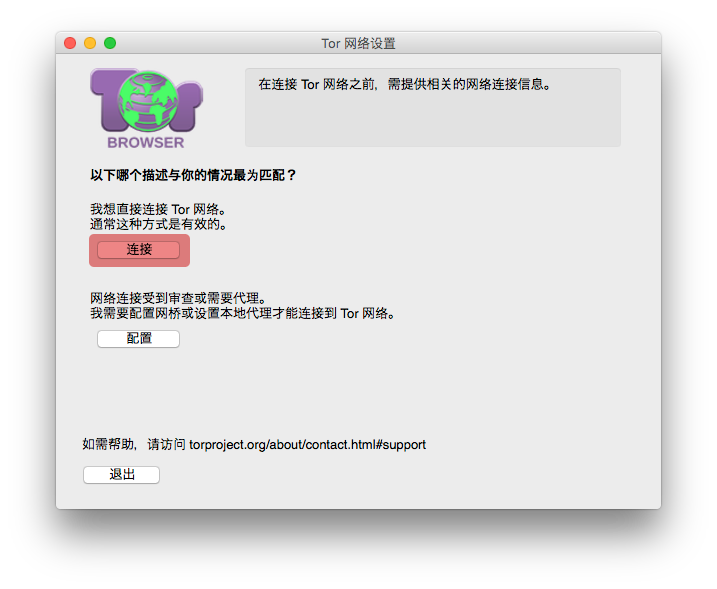

故障排除
理论上来说，当 Tor 浏览器启动后您应该可以直接开始浏览网页，若是首次启动的话，顶多只需要再点击“连接”按钮即可开始上网。

快速修复
如果 Tor 浏览器没有连接，那么可能比较简单。逐个尝试下列方法：
您的计算机的系统始终必须正确设置，否则 Tor 无法连接。
确保没有 Tor 浏览器正在运行。如果您无法确认，请重启您的计算机。
请确认您电脑中所安装的杀毒软件不会干扰或阻挡洋葱路由的运行，若您不确定的话可能需要查阅杀毒软件的相关手册或说明文档。
临时禁用您的防火墙。
移除掉 Tor 浏览器后再重新安装，若是要更新版本的话，请不要用新版软件去覆盖已安装的旧版本，安装前先确认旧版本是否已经完全移除。
您的连接是否受到审查？
如果您仍然无法连接上网，很有可能是因为您的网络服务供应商有使用会阻挡洋葱路由网络连接的网络过滤监控系统，请参考回避网页以了解可行的解决方式。
已知问题
Tor 浏览器的开发仍在不断进行中，有些已知的软件错误可能仍未被修复，您可以查阅已知问题页面了解您遭遇的问题是否已被收录其中。